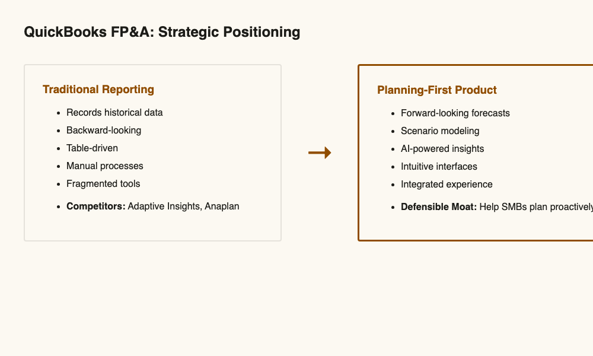
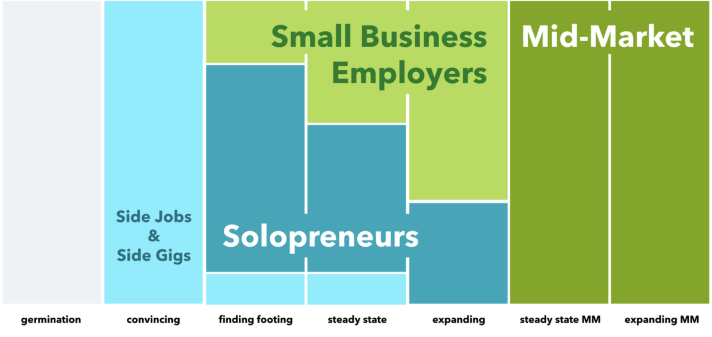
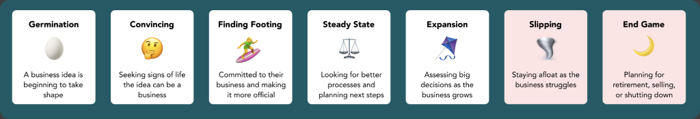
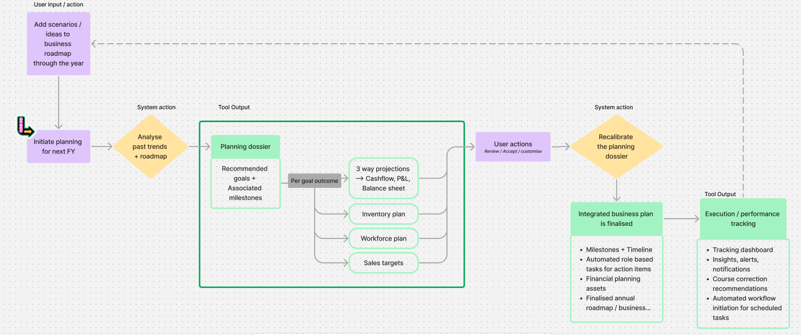
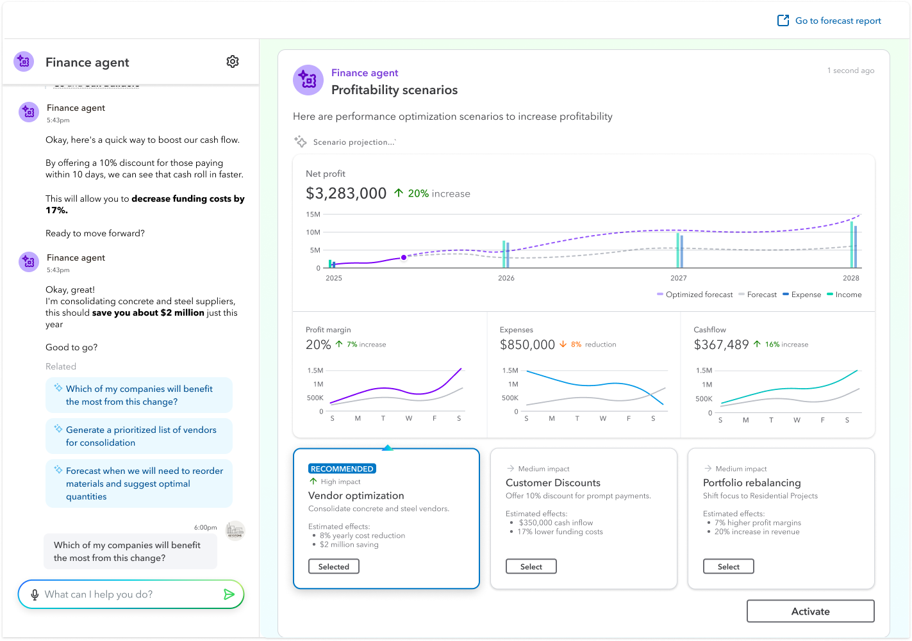
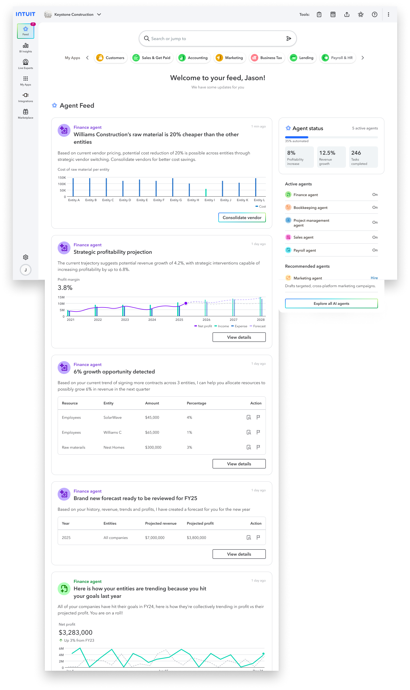
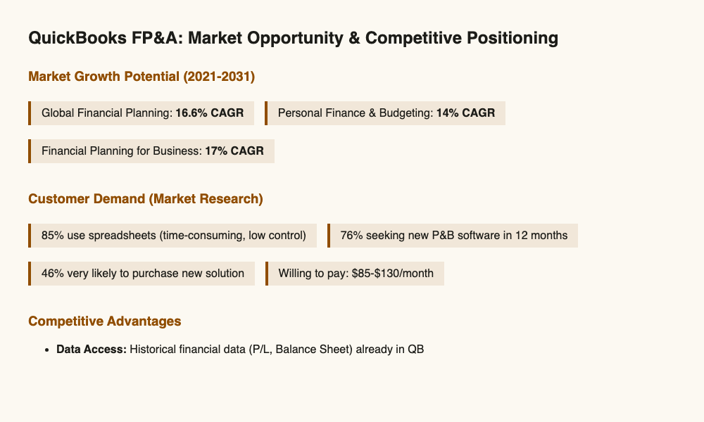

QuickBooks is the financial backbone for tens of millions of SMBs. When I joined in 2021, it had no integrated planning or forecasting capability for mid-market customers — a gap that mattered at scale. Within my first six months at Intuit, I was called to lead FP&A in addition to heading design for QuickBooks Desktop. My mandate: design and lead a 0→1 financial planning product, from first concept through general availability.
Mid-market SMBs lacked integrated tools for forward-looking financial planning. 85% of our target customers were running their entire financial planning on spreadsheets — outside QuickBooks entirely. Only 13% could identify business issues in time to act on them, and 80% said they moved too slowly to correct course. Annual budgets were taking 2–3 months to produce. The product gap wasn't marginal. It was structural.
Key customer pain points:

Strategic positioning: Planning-first product vs traditional reporting
Rather than jump into design, I started with strategic discovery. But critically, I did this while simultaneously building a design team in India—a move that was unconventional but strategic.
The core team was deliberately tight — a senior designer, a senior content designer, and an associate researcher working closely with me. Small enough for speed and coherence; senior enough to move without hand-holding.
In parallel, I was building and leading Intuit India's design community — seeding other product teams, establishing design as a career path, and growing what became a 50+ designer organisation across Intuit India. That broader work ran alongside FP&A but was a separate undertaking.
Three pivotal design decisions shaped the entire product:
Not: Extend QuickBooks with more advanced financial reports
Instead: Go beyond reporting toward forward-looking financial planning — starting with cashflow projection
My thinking: Businesses of all sizes and stages were struggling with the same thing — knowing what their cash position would look like weeks or months ahead. Reporting told them what had happened. Cashflow projection told them what was coming. That forward-looking predictability was the gap no existing QuickBooks feature addressed, and it was the right place to start.
Not: Require finance experts to build models
Instead: Embed AI to democratize planning through intuitive interfaces
My execution: I designed the Forecast Builder interface, Scenario Comparison experience, and Insights Dashboard — each tested with real customers and iterated 20+ times based on feedback. The AI capabilities went deep: payment consolidation, transaction summaries, and prediction of future money flow — surfaces that transformed raw financial data into decisions a business owner could actually act on.
Not: Build another feature within QB Online
Instead: Position as a new, premium SKU within the Intuit ecosystem
Impact: This decision rippled across the entire organization. It influenced product roadmaps, sales strategy, and enterprise tier positioning, contributing to the Intuit Enterprise Suite.

Segment map: from germination through expansion — where FP&A tools become essential and where mid-market begins

Business stages framework: the seven stages of a business's life — each with distinct planning needs that shaped how we designed the product
FP&A didn't build Intuit's foundational design system — but we were the first product to ride the AI bus. For both generative conversational AI and emerging agentic systems, we were the first team at Intuit to create components specifically designed for AI-driven experiences.
This wasn't just about visual consistency. We were working through questions that had no established answers yet: How should an AI prediction be presented so users trust it but don't over-rely on it? How do you surface an AI recommendation in a way that's explainable without being overwhelming? How do you design components that could extend gracefully as AI capabilities evolved — so the system wouldn't need to be rebuilt every time the model improved?
The three design challenges we worked through: acceptability (would users trust and act on AI outputs?), explainability (could they understand why the AI said what it said?), and extendability (would these components hold up as agentic AI moved from suggestion to action?). The answers shaped components that became reference points for other Intuit teams moving into AI product work.

Information architecture for integrated planning — one of the first artefacts created, mapping how planning data, reporting, and forecasting would connect across the product
Vision video created at the close of the research phase — not a product demo but a provocation. We used this to generate curiosity, secure stakeholder buy-in, and bring investment to the initiative. A roadshow of sorts: conducted across the month to build alignment across teams and geographies, globally.
Problem: Non-experts need to build financial forecasts without being intimidated.
Approach: Guided experience (step-by-step wizard), familiar mental models (templates based on common scenarios), transparency (show underlying assumptions), and AI as assistant (suggestions, not mandates).
What testing taught us: We designed every day, tested every week, and released every sprint. Users wanted to see why the AI recommended something; complex terminology scared people away; confidence levels were critical for trust.

Forecast Builder — 2026 interface
Problem: Business owners needed to weigh financial decisions without needing a finance degree to interpret the data.
Approach: Side-by-side scenario comparison to make the impact of "what-if" decisions tangible — key metrics surfaced, drill-down available. For the Insights Dashboard, AI surfaced the most important signals automatically: anomaly detection, trend forecasting, actionable next steps.
Design philosophy: Make intelligence visible without overwhelming the user.

Insights Dashboard — 2026 interface
We went GA within 6 months of inception — through learning and failing fast. Speed was as much a design decision as any interface choice.
Three years after launch, the Financial Planning & Analysis product is a self-sustaining business with a dedicated product and engineering team, expanding feature set, and continued AI evolution.
The product itself continued evolving: agentic workflows, expanded SKUs, deeper enterprise positioning. The patterns established here — in AI component design, information architecture, and structured user testing — became reference points across Intuit as other teams moved into AI product work.
Starting something from nothing inside a mature ecosystem — and watching it hold its shape long after you've moved on — is a different kind of satisfaction than shipping a feature. That's what this was.

Market differentiation: QuickBooks FP&A vs traditional competitors